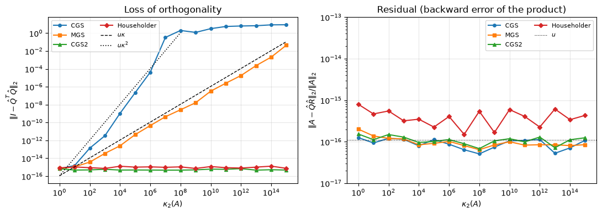
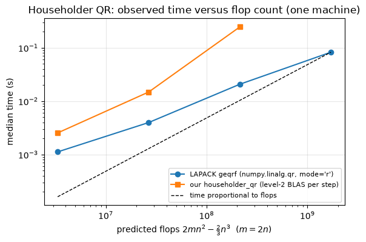
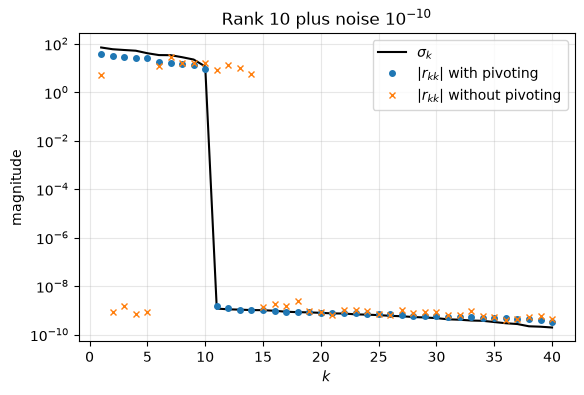

7.12. Lab 7: QR factorization#
This notebook accompanies Chapter 7 of the notes. Every experiment checks a statement from the chapter numerically.
Learning objectives. After working through this lab you should be able to
build orthogonal projectors stably as \(QQ^T\) and explain why \(A(A^TA)^{-1}A^T\) is a poor numerical recipe;
implement classical Gram-Schmidt (CGS), modified Gram-Schmidt (MGS) and CGS with reorthogonalization (CGS2), and measure how their loss of orthogonality depends on \(\kappa_2(A)\);
implement Householder QR with implicit storage of \(Q\), apply \(Q\) and \(Q^T\) without forming them, form \(Q_1\) by backward accumulation, and verify the result against LAPACK;
compare flop counts with observed run times, and interpret the latter as observations on one machine;
use column pivoting to estimate numerical rank, and recognize when it fails;
factor an upper Hessenberg matrix with Givens rotations.
Run the cells in order from a fresh kernel.
import time
import matplotlib.pyplot as plt
import numpy as np
import scipy.linalg as sla
rng = np.random.default_rng(20260707)
u = np.finfo(float).eps / 2 # unit roundoff of IEEE double precision, 2**-53
plt.rcParams.update({"figure.figsize": (6.4, 4.0), "axes.grid": True, "grid.alpha": 0.3})
print(f"NumPy {np.__version__}; unit roundoff u = {u:.3e}")
def matrix_with_condition(m, n, kappa, rng):
"""Return A = U diag(s) V^T with random orthonormal U, V and log-spaced s from 1 to 1/kappa."""
U, _ = np.linalg.qr(rng.standard_normal((m, n)))
V, _ = np.linalg.qr(rng.standard_normal((n, n)))
s = np.logspace(0, -np.log10(kappa), n)
return (U * s) @ V.T
def normalize_signs(Q, R):
"""Return (Q D, D R) with D = diag(sign(r_jj)), sign(0) = 1, so that diag(R) >= 0."""
d = np.where(np.diag(R) < 0, -1.0, 1.0)
return Q * d, d[:, None] * R
def orth_loss(Q):
"""||I - Q^T Q||_2, the departure of the columns of Q from orthonormality."""
return np.linalg.norm(np.eye(Q.shape[1]) - Q.T @ Q, 2)
NumPy 2.5.3; unit roundoff u = 1.110e-16
7.12.1. 1. Projectors#
For \(Q\) with orthonormal columns, \(P = QQ^T\) is the orthogonal projector onto
\(\operatorname{range}(Q)\) (Theorem 7.3). For a basis \(A\) that is
not orthonormal, \(P = A(A^TA)^{-1}A^T\) is the same matrix in exact arithmetic
(Proposition 7.1). We build both for matrices of
increasing condition number and check the defining properties \(P^2 = P\) and
\(P^T = P\). We use the \(Q\) factor from numpy.linalg.qr (Householder QR),
whose departure from orthonormality is a small multiple of \(u\).
m, n = 100, 10
print(" kappa ||P^2-P|| (normal eq.) ||P-P^T|| (normal eq.) ||P^2-P|| (QQ^T) u*kappa^2")
for kappa in [1e0, 1e2, 1e4, 1e6, 1e8]:
A = matrix_with_condition(m, n, kappa, rng)
P_normal = A @ np.linalg.solve(A.T @ A, A.T) # the formula, used literally
Q, _ = np.linalg.qr(A)
P_qr = Q @ Q.T
idem_n = np.linalg.norm(P_normal @ P_normal - P_normal, 2)
sym_n = np.linalg.norm(P_normal - P_normal.T, 2)
idem_q = np.linalg.norm(P_qr @ P_qr - P_qr, 2)
print(f"{kappa:7.0e} {idem_n:20.1e} {sym_n:20.1e} {idem_q:16.1e} {u * kappa**2:9.1e}")
# QQ^T: ||P^2 - P|| = ||Q (Q^T Q - I) Q^T|| <= (1 + ||E||)||E|| with E = Q^T Q - I = O(m n u) (Householder).
assert idem_q < 10 * m * n * u
kappa ||P^2-P|| (normal eq.) ||P-P^T|| (normal eq.) ||P^2-P|| (QQ^T) u*kappa^2
1e+00 3.1e-16 1.5e-16 5.4e-16 1.1e-16
1e+02 4.0e-13 5.5e-14 4.9e-16 1.1e-12
1e+04 8.1e-09 6.8e-10 6.3e-16 1.1e-08
1e+06 4.2e-05 6.8e-07 4.2e-16 1.1e-04
1e+08 3.3e-02 1.0e-02 6.0e-16 1.1e+00
Interpretation. \(QQ^T\) is idempotent to within a few multiples of \(u\) for every \(\kappa\), and symmetric to rounding error. The literal formula loses idempotency and symmetry roughly in proportion to \(u\kappa_2(A)^2\), the condition number of the Gram matrix \(A^TA\). At \(\kappa = 10^8\) it is no longer a projector in any useful sense, although the columns of \(A\) are linearly independent and \(Q_1Q_1^T\) is computed from the same matrix without difficulty.
An oblique projector can have a large norm. The matrix \(\begin{bmatrix}1&t\\0&0\end{bmatrix}\) is a projector for every \(t\), with \(\|P\|_2 = \sqrt{1+t^2}\) (Exercise 7.2).
for t in [0.0, 1.0, 10.0, 1e3]:
P = np.array([[1.0, t], [0.0, 0.0]])
print(f"t = {t:6g}: ||P^2 - P|| = {np.linalg.norm(P @ P - P):.0e}, ||P||_2 = {np.linalg.norm(P, 2):9.3f}, "
f"sqrt(1+t^2) = {np.sqrt(1 + t**2):9.3f}")
assert np.array_equal(P @ P, P)
assert abs(np.linalg.norm(P, 2) - np.sqrt(1 + t**2)) <= 4 * u * np.sqrt(1 + t**2) # SVD: relative error O(u)
t = 0: ||P^2 - P|| = 0e+00, ||P||_2 = 1.000, sqrt(1+t^2) = 1.000
t = 1: ||P^2 - P|| = 0e+00, ||P||_2 = 1.414, sqrt(1+t^2) = 1.414
t = 10: ||P^2 - P|| = 0e+00, ||P||_2 = 10.050, sqrt(1+t^2) = 10.050
t = 1000: ||P^2 - P|| = 0e+00, ||P||_2 = 1000.000, sqrt(1+t^2) = 1000.000
7.12.2. 2. A worked example and the signs of \(R\)#
Example 7.2 computes the thin QR factorization of \(A = \begin{bmatrix}3&-6\\4&-8\\0&1\end{bmatrix}\) by hand: \(Q_1 = \begin{bmatrix}0.6&0\\0.8&0\\0&1\end{bmatrix}\) and \(R_1 = \begin{bmatrix}5&-10\\0&1\end{bmatrix}\). NumPy calls LAPACK, which uses Householder reflectors with \(\alpha = -\operatorname{sign}(x_1)\|x\|_2\) and does not make the diagonal of \(R\) positive.
A = np.array([[3.0, -6.0], [4.0, -8.0], [0.0, 1.0]])
Q, R = np.linalg.qr(A)
print("numpy R =\n", R)
print("diag(R) =", np.diag(R), " <- negative entries are normal: LAPACK does not normalize signs")
Qn, Rn = normalize_signs(Q, R)
print("after normalization: R =\n", Rn)
Q_hand = np.array([[0.6, 0.0], [0.8, 0.0], [0.0, 1.0]])
R_hand = np.array([[5.0, -10.0], [0.0, 1.0]])
# Small integer data: the factors agree to a few ulps of their entries (sizes <= 10).
assert np.allclose(Qn, Q_hand, rtol=0, atol=10 * u) and np.allclose(Rn, R_hand, rtol=0, atol=100 * u)
assert np.allclose(R, -R_hand, rtol=0, atol=100 * u) # here D = diag(-1, -1), as in the Householder example of the notes
numpy R =
[[-5. 10.]
[ 0. -1.]]
diag(R) = [-5. -1.] <- negative entries are normal: LAPACK does not normalize signs
after normalization: R =
[[ 5. -10.]
[ -0. 1.]]
The uniqueness theorem (Theorem 7.5) applies only after the signs are normalized. Comparing unnormalized factors from two different routines is a common source of false alarms.
7.12.3. 3. Gram-Schmidt: CGS, MGS and CGS2#
We implement Algorithm 7.1, Algorithm 7.2 and Algorithm 7.3. CGS computes all coefficients of column \(j\) from the original \(a_j\) in one matrix-vector product; MGS updates the working vector after each projection; CGS2 performs the CGS step twice.
def cgs(A):
"""Classical Gram-Schmidt: r_{1:j-1,j} = Q_{j-1}^T a_j with the original column."""
m, n = A.shape
Q = np.zeros((m, n))
R = np.zeros((n, n))
for j in range(n):
R[:j, j] = Q[:, :j].T @ A[:, j]
v = A[:, j] - Q[:, :j] @ R[:j, j]
R[j, j] = np.linalg.norm(v)
Q[:, j] = v / R[j, j]
return Q, R
def mgs(A):
"""Modified Gram-Schmidt: each r_ij is computed from the partially reduced vector."""
m, n = A.shape
Q = np.zeros((m, n))
R = np.zeros((n, n))
for j in range(n):
v = A[:, j].copy()
for i in range(j):
R[i, j] = Q[:, i] @ v
v -= R[i, j] * Q[:, i]
R[j, j] = np.linalg.norm(v)
Q[:, j] = v / R[j, j]
return Q, R
def cgs2(A):
"""CGS with one reorthogonalization of every column ("twice is enough")."""
m, n = A.shape
Q = np.zeros((m, n))
R = np.zeros((n, n))
for j in range(n):
v = A[:, j].copy()
for _ in range(2):
s = Q[:, :j].T @ v
v -= Q[:, :j] @ s
R[:j, j] += s
R[j, j] = np.linalg.norm(v)
Q[:, j] = v / R[j, j]
return Q, R
Verification on a well-conditioned matrix. For a Gaussian \(60\times15\) matrix, \(\kappa_2(A)\) is small (we print it), so all three methods should give orthonormal columns to within a modest multiple of \(u\kappa^2\) (the weakest of the bounds in Theorem 7.6) and residuals of order \(u\) (Proposition 7.4). After sign normalization they should agree with NumPy to within a multiple of \(\kappa u\) (forward error of order condition number times backward error).
m, n = 60, 15
A = rng.standard_normal((m, n))
kappa = np.linalg.cond(A)
Q_ref, R_ref = normalize_signs(*np.linalg.qr(A))
print(f"kappa_2(A) = {kappa:.2f}")
for f in (cgs, mgs, cgs2):
Q, R = f(A)
res = np.linalg.norm(A - Q @ R, 2) / np.linalg.norm(A, 2)
diffQ = np.linalg.norm(Q - Q_ref, 2)
print(f"{f.__name__:5s} ||I - Q^T Q|| = {orth_loss(Q):.1e}, ||A - QR||/||A|| = {res:.1e}, ||Q - Q_numpy|| = {diffQ:.1e}")
assert np.all(np.diag(R) > 0) # Gram-Schmidt produces the positive-diagonal factorization
assert orth_loss(Q) < 10 * m * n * u * kappa**2 # CGS bound with modest constants; MGS and CGS2 are better
assert res < 10 * m * n * u # small residual for all variants
assert diffQ < 10 * m * n * u * kappa**2
kappa_2(A) = 3.11
cgs ||I - Q^T Q|| = 5.2e-16, ||A - QR||/||A|| = 1.1e-16, ||Q - Q_numpy|| = 6.0e-16
mgs ||I - Q^T Q|| = 7.5e-16, ||A - QR||/||A|| = 1.8e-16, ||Q - Q_numpy|| = 6.2e-16
cgs2 ||I - Q^T Q|| = 5.8e-16, ||A - QR||/||A|| = 1.1e-16, ||Q - Q_numpy|| = 5.8e-16
Läuchli’s matrix. Example 7.3 predicts, by a hand computation in floating-point arithmetic, that CGS returns \(\widehat q_2^T\widehat q_3 = 1/2\), while MGS returns inner products of size \(\varepsilon/\sqrt2\) and \(\varepsilon/\sqrt6\), and that CGS2 repairs CGS.
eps_l = 1e-8
A_l = np.array([[1, 1, 1], [eps_l, 0, 0], [0, eps_l, 0], [0, 0, eps_l]])
print(f"kappa_2 = {np.linalg.cond(A_l):.3e}; u*kappa = {u * np.linalg.cond(A_l):.1e}")
for f in (cgs, mgs, cgs2):
Q, R = f(A_l)
G = Q.T @ Q
res = np.linalg.norm(A_l - Q @ R) / np.linalg.norm(A_l)
print(f"{f.__name__:5s} q1.q2 = {G[0, 1]:+.2e} q1.q3 = {G[0, 2]:+.2e} q2.q3 = {G[1, 2]:+.2e} residual = {res:.1e}")
Qc, _ = cgs(A_l)
Qm, _ = mgs(A_l)
assert abs(Qc[:, 1] @ Qc[:, 2] - 0.5) < 10 * u # the hand computation
assert abs(Qm[:, 0] @ Qm[:, 2] + eps_l / np.sqrt(6)) < 1e-3 * eps_l
assert orth_loss(cgs2(A_l)[0]) < 10 * u
kappa_2 = 1.732e+08; u*kappa = 1.9e-08
cgs q1.q2 = -7.07e-09 q1.q3 = -7.07e-09 q2.q3 = +5.00e-01 residual = 8.3e-26
mgs q1.q2 = -7.07e-09 q1.q3 = -4.08e-09 q2.q3 = +1.03e-16 residual = 1.4e-25
cgs2 q1.q2 = +1.18e-24 q1.q3 = +7.60e-25 q2.q3 = -3.71e-17 residual = 5.6e-25
7.12.4. 4. Householder QR from scratch#
We implement Algorithm 7.4 in the storage format used by LAPACK: \(R\) in the upper triangle, the Householder vectors (with implicit leading entry \(1\)) below the diagonal, and the scalars \(\beta_k\) in a separate array. The Householder vector follows Algorithm 1.1 with \(\operatorname{sign}(0) = 1\).
def householder_qr(A):
"""Householder QR in factored form. Returns (F, beta): R = triu(F), v_k = [1; F[k+1:, k]]."""
F = np.array(A, dtype=float)
m, n = F.shape
beta = np.zeros(n)
for k in range(n):
x = F[k:, k]
normx = np.linalg.norm(x)
if normx == 0.0:
continue # H_k = I, beta_k = 0
s = 1.0 if x[0] >= 0 else -1.0 # sign(0) = +1
alpha = -s * normx
v = x.copy()
v[0] = x[0] - alpha # = x[0] + s*||x||: no cancellation
v /= v[0]
beta[k] = 2.0 / (v @ v)
w = v @ F[k:, k + 1:] # w^T = v^T A(k:m, k+1:n): 2pq flops
F[k:, k + 1:] -= beta[k] * np.outer(v, w) # rank-one update: 2pq flops
F[k, k] = alpha
F[k + 1:, k] = v[1:] # store the essential part of v
return F, beta
def apply_Qt(F, beta, B):
"""Return Q^T B = H_n ... H_1 B without forming Q (about 4mn - 2n^2 flops per column of B)."""
B = np.array(B, dtype=float)
n = F.shape[1]
for k in range(n):
v = np.concatenate(([1.0], F[k + 1:, k]))
B[k:] -= beta[k] * np.outer(v, v @ B[k:]) if B.ndim == 2 else beta[k] * v * (v @ B[k:])
return B
def apply_Q(F, beta, X):
"""Return Q X = H_1 ... H_n X without forming Q."""
X = np.array(X, dtype=float)
n = F.shape[1]
for k in reversed(range(n)):
v = np.concatenate(([1.0], F[k + 1:, k]))
X[k:] -= beta[k] * np.outer(v, v @ X[k:]) if X.ndim == 2 else beta[k] * v * (v @ X[k:])
return X
def form_Q1(F, beta):
"""Form the thin factor Q_1 = H_1 ... H_n [I_n; 0] by backward accumulation."""
m, n = F.shape
Q = np.zeros((m, n))
Q[:n, :n] = np.eye(n)
for k in reversed(range(n)):
v = np.concatenate(([1.0], F[k + 1:, k]))
Q[k:, k:] -= beta[k] * np.outer(v, v @ Q[k:, k:]) # only rows k:m, columns k:n are touched
return Q
Verification against LAPACK. scipy.linalg.qr(A, mode="raw") returns the
output of LAPACK’s geqrf, which uses the same sign convention and the same
normalization \(v_1 = 1\). Our factored form should agree with it to rounding
error, which for this well-conditioned matrix means a modest multiple of
\(u\|A\|\).
m, n = 9, 5
A = rng.standard_normal((m, n))
F, beta = householder_qr(A)
(F_lapack, tau), _ = sla.qr(A, mode="raw")
print("max |F - F_lapack| =", np.max(np.abs(F - F_lapack)))
print("max |beta - tau| =", np.max(np.abs(beta - tau)))
assert np.max(np.abs(F - F_lapack)) < 100 * m * n * u * np.linalg.norm(A, 2)
assert np.max(np.abs(beta - tau)) < 100 * m * u # beta = 2/(v^T v) in [1, 2]
max |F - F_lapack| = 1.3322676295501878e-15
max |beta - tau| = 2.220446049250313e-16
Now the thin factors, the implicit products, and a comparison with
numpy.linalg.qr after sign normalization. The tolerances come from
Theorem 7.7: residual and loss of
orthogonality are \(O(mn^{3/2}u)\), with no dependence on \(\kappa\).
m, n = 300, 80
A = rng.standard_normal((m, n))
F, beta = householder_qr(A)
R1 = np.triu(F[:n])
Q1 = form_Q1(F, beta)
res = np.linalg.norm(A - Q1 @ R1, "fro") / np.linalg.norm(A, "fro")
print(f"||A - Q1 R1||_F/||A||_F = {res:.1e}, ||I - Q1^T Q1||_2 = {orth_loss(Q1):.1e}, m n^1.5 u = {m * n**1.5 * u:.1e}")
assert res < m * n**1.5 * u and orth_loss(Q1) < m * n**1.5 * u
Qn, Rn = normalize_signs(*np.linalg.qr(A))
Qm, Rm = normalize_signs(Q1, R1)
kappa = np.linalg.cond(A)
print(f"kappa = {kappa:.2f}; after sign normalization ||Q1 - Q_numpy|| = {np.linalg.norm(Qm - Qn, 2):.1e}, "
f"||R1 - R_numpy||/||R|| = {np.linalg.norm(Rm - Rn, 2) / np.linalg.norm(Rn, 2):.1e}")
assert np.linalg.norm(Qm - Qn, 2) < kappa * m * n**1.5 * u # forward difference ~ condition x backward error
b = rng.standard_normal(m)
x = rng.standard_normal(n)
Qtb = apply_Qt(F, beta, b)
print(f"||Q^T b (implicit) - Q1^T b|| = {np.linalg.norm(Qtb[:n] - Q1.T @ b):.1e}; "
f"norm preserved: | ||Q^T b|| - ||b|| | / ||b|| = {abs(np.linalg.norm(Qtb) - np.linalg.norm(b)) / np.linalg.norm(b):.1e}")
assert np.linalg.norm(Qtb[:n] - Q1.T @ b) < m * n**1.5 * u * np.linalg.norm(b)
x_pad = np.concatenate([x, np.zeros(m - n)])
assert np.linalg.norm(apply_Q(F, beta, x_pad) - Q1 @ x) < m * n**1.5 * u * np.linalg.norm(x)
assert np.linalg.norm(apply_Q(F, beta, apply_Qt(F, beta, b)) - b) < m * n**1.5 * u * np.linalg.norm(b)
||A - Q1 R1||_F/||A||_F = 6.4e-16, ||I - Q1^T Q1||_2 = 1.4e-15, m n^1.5 u = 2.4e-11
kappa = 3.02; after sign normalization ||Q1 - Q_numpy|| = 1.6e-15, ||R1 - R_numpy||/||R|| = 5.4e-16
||Q^T b (implicit) - Q1^T b|| = 6.6e-15; norm preserved: | ||Q^T b|| - ||b|| | / ||b|| = 0.0e+00
The implicit application of \(Q^T\) is exactly what a least-squares solver needs (Chapter 8): \(Q^Tb\) in about \(4mn\) flops, without ever forming the \(m\times m\) matrix \(Q\).
7.12.5. 5. Loss of orthogonality versus \(\kappa\)#
This reproduces Figure 7.2 with our own implementations, including our Householder QR. For each \(\kappa\) we build a \(50\times20\) matrix with singular values logarithmically spaced between \(1\) and \(1/\kappa\), and measure \(\|I - \widehat Q^T\widehat Q\|_2\) and the residual \(\|A - \widehat Q\widehat R\|_2/\|A\|_2\).
def householder_thin(A):
F, beta = householder_qr(A)
n = A.shape[1]
return form_Q1(F, beta), np.triu(F[:n])
methods = {"CGS": cgs, "MGS": mgs, "CGS2": cgs2, "Householder": householder_thin}
kappas = 10.0 ** np.arange(0, 16)
m, n = 50, 20
loss = {name: [] for name in methods}
resid = {name: [] for name in methods}
for kappa in kappas:
A = matrix_with_condition(m, n, kappa, rng)
for name, f in methods.items():
Q, R = f(A)
loss[name].append(orth_loss(Q))
resid[name].append(np.linalg.norm(A - Q @ R, 2) / np.linalg.norm(A, 2))
fig, axes = plt.subplots(1, 2, figsize=(11, 4))
for name, marker in zip(methods, "os^D"):
axes[0].loglog(kappas, loss[name], marker=marker, ms=4, label=name)
axes[1].loglog(kappas, resid[name], marker=marker, ms=4, label=name)
axes[0].loglog(kappas, u * kappas, "k--", lw=1, label=r"$u\kappa$")
k2 = kappas[u * kappas**2 < 10]
axes[0].loglog(k2, u * k2**2, "k:", lw=1.2, label=r"$u\kappa^2$")
axes[0].set_ylabel(r"$\|I - \hat Q^T\hat Q\|_2$")
axes[0].set_title("Loss of orthogonality")
axes[1].axhline(u, color="k", lw=0.8, ls=":", label="$u$")
axes[1].set_ylabel(r"$\|A - \hat Q\hat R\|_2 / \|A\|_2$")
axes[1].set_title("Residual (backward error of the product)")
axes[1].set_ylim(1e-17, 1e-13)
for ax in axes:
ax.set_xlabel(r"$\kappa_2(A)$")
ax.legend(fontsize=8, ncol=2)
plt.tight_layout()
plt.show()
print("kappa CGS MGS CGS2 Householder")
for i in (8, 12):
print(f"1e{i:<3d} " + " ".join(f"{loss[name][i]:9.1e}" for name in methods))
loss = {k: np.array(v) for k, v in loss.items()}
# ch07-thm-gs-orthogonality and ch07-thm-householder-stability: MGS ~ u kappa; CGS2, Householder O(u).
assert np.all(loss["MGS"] < 100 * u * kappas)
assert np.all(loss["CGS2"] < 100 * u) and np.all(loss["Householder"] < m * n**1.5 * u)
assert loss["CGS"][kappas == 1e10][0] > 1e-2 # CGS has lost orthogonality by kappa = 1e10
assert max(max(r) for r in resid.values()) < 10 * m * n * u # all residuals are small

kappa CGS MGS CGS2 Householder
1e8 2.0e+00 2.7e-09 4.7e-16 1.1e-15
1e12 6.3e+00 1.8e-05 6.9e-16 8.1e-16
Interpretation. The curves have the slopes predicted by Theorem 7.6: slope 1 for MGS (parallel to \(u\kappa\)) and slope 2 for CGS (parallel to \(u\kappa^2\)) until it saturates at order one near \(\kappa\approx u^{-1/2}\approx10^8\). The hypotheses of the theorem (\(u\kappa\) or \(u\kappa^2\) sufficiently small) fail at the right end of the plot, yet MGS continues roughly along \(u\kappa\) and CGS2 stays near \(u\): these are observations, not guarantees. The right panel shows that all four methods produce factors whose product reproduces \(A\) to working accuracy. The difference between them is entirely in the orthogonality of \(\widehat Q\), which the residual cannot detect.
The exact values printed above depend on the random matrices and on the machine; the notes quote the values from the figure script, which uses a fixed seed and NumPy’s Householder QR.
7.12.6. 6. Cost: flops versus observed time#
Proposition 7.5 predicts \(2mn^2 - \tfrac23n^3\) flops.
We time LAPACK’s Householder QR (numpy.linalg.qr(A, mode="r"), which does not
form \(Q\)) and our Python implementation, taking the median of several runs.
The ratio of predicted flops to time is an observed rate on the machine that
ran this notebook.
def median_time(f, *args, repeats=5):
f(*args) # warm-up
times = []
for _ in range(repeats):
t0 = time.perf_counter()
f(*args)
times.append(time.perf_counter() - t0)
return float(np.median(times))
def flops_qr(m, n):
return 2 * m * n**2 - 2 * n**3 / 3
shapes = [(2 * n, n) for n in (100, 200, 400, 800)]
t_lapack = [median_time(lambda A: np.linalg.qr(A, mode="r"), rng.standard_normal(s)) for s in shapes]
t_ours = [median_time(householder_qr, rng.standard_normal(s), repeats=3) for s in shapes[:3]]
fl = np.array([flops_qr(*s) for s in shapes])
fig, ax = plt.subplots()
ax.loglog(fl, t_lapack, "o-", label="LAPACK geqrf (numpy.linalg.qr, mode='r')")
ax.loglog(fl[:3], t_ours, "s-", label="our householder_qr (level-2 BLAS per step)")
ax.loglog(fl, t_lapack[-1] * fl / fl[-1], "k--", lw=1, label="time proportional to flops")
ax.set_xlabel(r"predicted flops $2mn^2 - \frac{2}{3}n^3$ ($m = 2n$)")
ax.set_ylabel("median time (s)")
ax.set_title("Householder QR: observed time versus flop count (one machine)")
ax.legend(fontsize=8)
plt.show()
for s, f_, t in zip(shapes, fl, t_lapack):
print(f"m x n = {s[0]:5d} x {s[1]:4d}: LAPACK {t * 1e3:8.2f} ms, observed rate {f_ / t / 1e9:6.1f} Gflop/s")
for s, f_, t in zip(shapes, fl, t_ours):
print(f"m x n = {s[0]:5d} x {s[1]:4d}: ours {t * 1e3:8.2f} ms, observed rate {f_ / t / 1e9:6.1f} Gflop/s")

m x n = 200 x 100: LAPACK 1.12 ms, observed rate 3.0 Gflop/s
m x n = 400 x 200: LAPACK 3.98 ms, observed rate 6.7 Gflop/s
m x n = 800 x 400: LAPACK 20.75 ms, observed rate 10.3 Gflop/s
m x n = 1600 x 800: LAPACK 82.70 ms, observed rate 20.6 Gflop/s
m x n = 200 x 100: ours 2.54 ms, observed rate 1.3 Gflop/s
m x n = 400 x 200: ours 14.85 ms, observed rate 1.8 Gflop/s
m x n = 800 x 400: ours 246.16 ms, observed rate 0.9 Gflop/s
Interpretation. The flop count is the machine-independent prediction:
for large sizes, time should grow roughly in proportion to it, that is, by a
factor of about \(8\) each time \(m\) and \(n\) are doubled. For small sizes fixed
overheads dominate. LAPACK is normally much faster than our implementation,
although both perform the same flops, because geqrf applies blocks of
reflectors with matrix-matrix products (compact WY form) while our loop
applies one reflector at a time with matrix-vector operations and pays the
Python interpreter’s overhead at every step. On a busy machine the timings
can be erratic, which is one reason to report medians and to treat all of
these numbers as observations on one machine and BLAS library, not as
properties of the algorithm.
7.12.7. 7. Column pivoting and numerical rank#
We construct a \(60\times40\) matrix of rank \(10\) whose first five columns are
all multiples of one vector, add noise of size \(10^{-10}\), and compare the
diagonal of \(R\) with and without pivoting. scipy.linalg.qr(A, pivoting=True)
returns an index vector p with A[:, p] = Q @ R.
m, n, r = 60, 40, 10
x = rng.standard_normal((m, 1))
A = np.hstack([x @ rng.standard_normal((1, 5)),
rng.standard_normal((m, r - 1)) @ rng.standard_normal((r - 1, n - 5))])
A += 1e-10 * rng.standard_normal((m, n))
Q, R, p = sla.qr(A, pivoting=True)
R0 = np.linalg.qr(A, mode="r")
sigma = np.linalg.svd(A, compute_uv=False)
tol = 1e-6 * abs(R[0, 0])
rank_qrcp = int(np.sum(np.abs(np.diag(R)) > tol))
print(f"numerical rank from pivoted QR (tolerance {tol:.1e}): {rank_qrcp}")
print(f"number of unpivoted |r_kk| above the same tolerance: {int(np.sum(np.abs(np.diag(R0)) > tol))}, "
f"first small one at k = {int(np.argmax(np.abs(np.diag(R0)) < tol)) + 1}")
print("singular values 9..12:", np.array2string(sigma[8:12], precision=2))
assert np.allclose(A[:, p], Q @ R, atol=100 * m * n * u * np.linalg.norm(A, 2))
assert rank_qrcp == r
assert np.all(np.diff(np.abs(np.diag(R))) <= 1e-12 * abs(R[0, 0])) # |r_kk| nonincreasing (ch07-thm-qrcp)
R22 = R[r:, r:]
assert sigma[r] <= np.linalg.norm(R22, 2) * (1 + 1e-8) # sigma_{k+1} <= ||R22||_2
fig, ax = plt.subplots()
k = np.arange(1, n + 1)
ax.semilogy(k, sigma, "k-", label=r"$\sigma_k$")
ax.semilogy(k, np.abs(np.diag(R)), "o", ms=4, label=r"$|r_{kk}|$ with pivoting")
ax.semilogy(k, np.abs(np.diag(R0)), "x", ms=5, label=r"$|r_{kk}|$ without pivoting")
ax.set_xlabel("$k$")
ax.set_ylabel("magnitude")
ax.set_title("Rank 10 plus noise $10^{-10}$")
ax.legend()
plt.show()
numerical rank from pivoted QR (tolerance 4.0e-05): 10
number of unpivoted |r_kk| above the same tolerance: 10, first small one at k = 2
singular values 9..12: [2.25e+01 1.16e+01 1.18e-09 1.10e-09]

With pivoting, the first ten \(|r_{kk}|\) track \(\sigma_1,\dots,\sigma_{10}\) and the remaining ones sit at the noise level, as Theorem 7.8 suggests. Without pivoting, small diagonal entries appear at positions \(2\) to \(5\) (the parallel columns) and large ones after them, so “the first small \(r_{kk}\)” would suggest rank one.
The Kahan matrix. Column pivoting can fail. For \(K_{50}(\theta)\) with \(\theta = 1.2\) (with the tiny diagonal perturbation of the notes), no interchanges occur and \(|r_{nn}|\) is not small, although \(\sigma_n\) is tiny.
def kahan(n, theta, pert=25):
s, c = np.sin(theta), np.cos(theta)
K = np.diag(s ** np.arange(n)) @ (np.eye(n) - c * np.triu(np.ones((n, n)), 1))
return K + np.diag(pert * np.finfo(float).eps * np.arange(n, 0, -1))
K = kahan(50, 1.2)
_, RK, pK = sla.qr(K, pivoting=True)
sK = np.linalg.svd(K, compute_uv=False)
print("column norms of K (min, max):", np.linalg.norm(K, axis=0).min(), np.linalg.norm(K, axis=0).max())
print("permutation is the identity:", np.array_equal(pK, np.arange(50)))
print(f"|r_nn| = {abs(RK[-1, -1]):.2e}, sigma_n = {sK[-1]:.2e}, sigma_(n-1) = {sK[-2]:.2e}")
assert abs(RK[-1, -1]) > 1e5 * sK[-1]
column norms of K (min, max): 0.9999999999999999 1.0000000000002776
permutation is the identity: True
|r_nn| = 3.18e-02, sigma_n = 1.56e-08, sigma_(n-1) = 3.98e-02
The diagonal of \(R\) bounds the singular values only weakly: \(\sigma_n\le|r_{kk}|\le\sigma_1\) for every \(k\) (Exercise 7.10). When rank decisions matter, confirm them with the SVD.
7.12.8. 8. Givens QR of an upper Hessenberg matrix#
An upper Hessenberg matrix has one nonzero subdiagonal, so \(n-1\) rotations
suffice, at a cost of about \(3n^2\) flops. We use the rotation convention of
Chapter 1: \(G = \begin{bmatrix}c&s\\-s&c\end{bmatrix}\) with
\(c = x_i/r\), \(s = x_j/r\) and \(r\) computed by hypot.
def givens(a, b):
"""Return (c, s) with [[c, s], [-s, c]] @ [a, b] = [r, 0]."""
if b == 0.0:
return 1.0, 0.0
r = np.hypot(a, b)
return a / r, b / r
def hessenberg_qr(H):
"""QR of an upper Hessenberg matrix by n-1 Givens rotations. Returns R and the list of (c, s)."""
R = np.array(H, dtype=float)
n = R.shape[0]
rotations = []
for k in range(n - 1):
c, s = givens(R[k, k], R[k + 1, k])
G = np.array([[c, s], [-s, c]])
R[k:k + 2, k:] = G @ R[k:k + 2, k:] # 6(n-k) flops: only two rows change
R[k + 1, k] = 0.0
rotations.append((c, s))
return R, rotations
def hessenberg_apply_Q(rotations, X):
"""Return Q X where Q^T = G_{n-1} ... G_1, i.e. Q = G_1^T ... G_{n-1}^T."""
X = np.array(X, dtype=float)
for k in reversed(range(len(rotations))):
c, s = rotations[k]
X[k:k + 2] = np.array([[c, -s], [s, c]]) @ X[k:k + 2]
return X
n = 200
# A Hessenberg matrix orthogonally similar to a Gaussian matrix, so it has the same (modest) condition number.
H = sla.hessenberg(rng.standard_normal((n, n)))
H = np.triu(H, -1) # remove rounding-level entries below the subdiagonal
R, rots = hessenberg_qr(H)
Q = hessenberg_apply_Q(rots, np.eye(n))
res = np.linalg.norm(H - Q @ R, 2) / np.linalg.norm(H, 2)
print(f"||H - QR||/||H|| = {res:.1e}, ||I - Q^T Q|| = {orth_loss(Q):.1e}, rotations used: {len(rots)}")
assert res < 10 * n * u and orth_loss(Q) < 10 * n * u # Givens QR is backward stable: O(n u) here
assert np.allclose(np.tril(R, -1), 0)
Qs, Rs = normalize_signs(*np.linalg.qr(H))
_, Rg = normalize_signs(Q, R)
kappa = np.linalg.cond(H)
print(f"kappa(H) = {kappa:.1e}; after sign normalization ||R_givens - R_numpy||/||R|| = "
f"{np.linalg.norm(Rg - Rs, 2) / np.linalg.norm(Rs, 2):.1e}")
assert np.linalg.norm(Rg - Rs, 2) / np.linalg.norm(Rs, 2) < 10 * kappa * n * u
RQ = R @ Q
print("R Q is upper Hessenberg:", np.allclose(np.tril(RQ, -2), 0, atol=10 * n * u * np.linalg.norm(H, 2)))
||H - QR||/||H|| = 6.1e-16, ||I - Q^T Q|| = 1.5e-15, rotations used: 199
kappa(H) = 4.9e+02; after sign normalization ||R_givens - R_numpy||/||R|| = 1.4e-15
R Q is upper Hessenberg:
True
The product \(RQ\) is again upper Hessenberg. One step of the QR algorithm of Chapter 10 replaces \(H\) by \(RQ = Q^THQ\), so each step on a Hessenberg matrix costs \(O(n^2)\) rather than \(O(n^3)\) flops.
7.12.9. 9. Tall and skinny matrices: CholeskyQR#
CholeskyQR (Remark 7.1) computes \(R\) as the Cholesky factor of \(A^TA\) and \(Q = AR^{-1}\). It is fast, but it forms \(A^TA\).
def cholesky_qr(A):
R = np.linalg.cholesky(A.T @ A).T # upper triangular, A^T A = R^T R
Q = sla.solve_triangular(R, A.T, trans="T", lower=False).T # Q = A R^{-1}
return Q, R
m, n = 5000, 20
print(" kappa CholeskyQR Householder")
for kappa in [1e0, 1e2, 1e4, 1e6, 1e7, 1e8, 1e9]:
A = matrix_with_condition(m, n, kappa, rng)
Qh, _ = np.linalg.qr(A)
try:
Qc, _ = cholesky_qr(A)
chol = f"{orth_loss(Qc):11.1e}"
except np.linalg.LinAlgError:
chol = " breakdown"
print(f"{kappa:7.0e} {chol} {orth_loss(Qh):11.1e}")
kappa CholeskyQR Householder
1e+00 4.7e-16 1.2e-15
1e+02 2.9e-13 1.6e-15
1e+04 6.6e-10 1.2e-15
1e+06 5.3e-06 1.3e-15
1e+07 4.9e-04 9.3e-16
1e+08 1.4e-01 1.6e-15
1e+09 breakdown 1.3e-15
The loss of orthogonality of CholeskyQR grows roughly like \(u\kappa^2\), and the Cholesky factorization breaks down (or produces garbage) once \(u\kappa^2\) is no longer small. Householder QR is unaffected. Exercise 7.12 asks you to add CholeskyQR2 and timings.
7.12.10. Common mistakes#
Expecting a positive diagonal from
numpy.linalg.qrorscipy.linalg.qr, or comparing factors from two routines without normalizing signs.Forming \(A(A^TA)^{-1}A^T\) or
inv(A.T @ A)to project or to solve least-squares problems.Forming the full \(m\times m\) \(Q\) (
mode="complete"or SciPy’s defaultmode="full") when only \(Q^Tb\) or the thin \(Q_1\) is needed.Using CGS without reorthogonalization when the columns may be nearly dependent, or judging an orthogonalization only by its residual \(\|A - QR\|\), which is small for every method.
Using
np.sign(x[0])in the Householder vector, which returns \(0\) for \(x_1 = 0\) and breaks the reflector; use \(\operatorname{sign}(0) = 1\).Treating the count of large \(|r_{kk}|\) from pivoted QR as a proof of numerical rank.
7.12.11. Your turn#
Modify
householder_qrto usenp.sign(x[0])and apply it to the matrix of Exercise 7.6, whose first entry is \(0\). What happens, and why?Add MGS with reorthogonalization (MGS2) to the experiment of Section 5. Is it better than CGS2? Which one would you prefer on a parallel computer, and why?
Use
apply_Qtto solve the least-squares problem \(\min\|Ax-b\|_2\) by solving \(R_1x = (Q^Tb)_{1:n}\), and compare withnumpy.linalg.lstsqfor \(\kappa_2(A) = 10^{10}\) (Chapter 8).Implement QR updating after appending a row (Exercise 7.8) and verify it against recomputing the factorization.
7.12.12. Key takeaways#
Orthogonal projectors are \(QQ^T\); the formula \(A(A^TA)^{-1}A^T\) loses symmetry and idempotency at the rate \(u\kappa^2\).
All Gram-Schmidt variants have small residuals; their orthogonality differs: \(u\kappa\) for MGS, \(u\kappa^2\) for CGS (until it saturates), and \(u\) for CGS2 and Householder QR.
Householder QR stores \(Q\) implicitly in the space of the zeros it creates, applies \(Q^T\) in \(4mn\) flops per vector, reproduces LAPACK’s factored form, and is backward stable.
LAPACK does not normalize the signs of \(\operatorname{diag}(R)\).
Column pivoting usually reveals numerical rank, but the Kahan matrix shows that it can fail.
7.12.13. Further reading#
Trefethen and Bau [1997], Lectures 6–10 and 16; Golub and Van Loan [2013], Chapter 5; Higham [2002], Chapter 19; Giraud et al. [2005] for the loss of orthogonality in Gram-Schmidt; Demmel et al. [2012] for communication-avoiding QR.